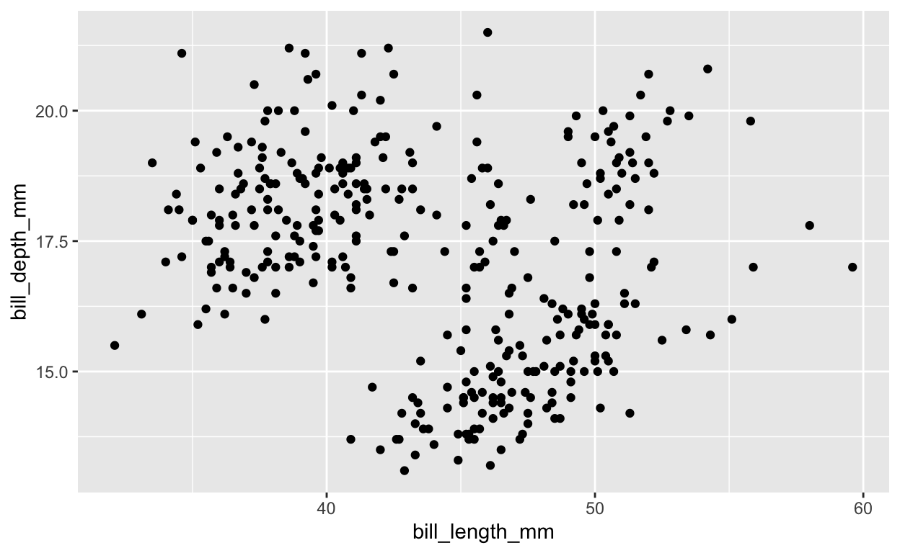
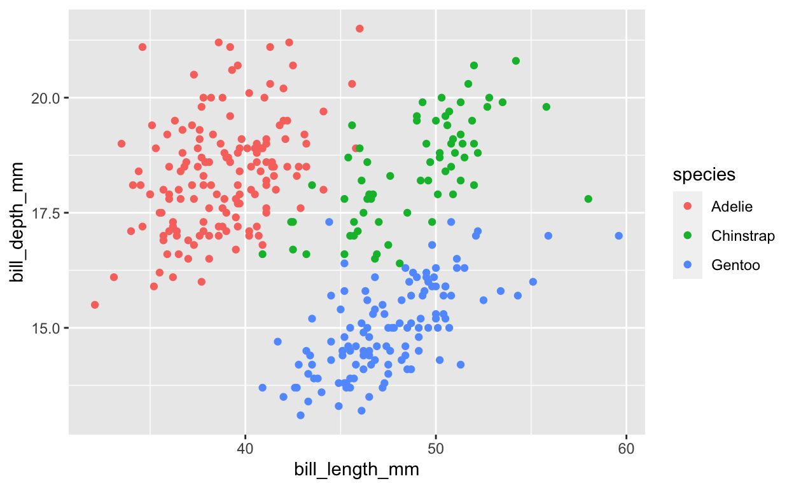

Welcome to R programming. This document is a learnr module designed to introduce you to basic concepts and constructs that are part of the R language. During this module, you will learn how to create data objects, determine a data object’s type, and use functions to manipulate data objects. We also will explore examples illustrating the utility of R for research management and data handling.
Throughout this module, you will see special areas where you can execute R code. You should use these areas to experiment and to complete tasks that check your understanding. Important These coding areas are not good for note-taking. Whatever you put in there will get erased eventually, so be sure to take notes somewhere else.
Run Code to run the entire code chunk
2 + 2
40 / 8
7 - 15You should see three outputs: 4, 5, and -8. These outputs match the three operations in the above code chunk. You can clear the outputs by clicking Start Over. Try writing your own mathematical operations in the code area. Click Run Code when you are ready to see if your code can execute
Some of the exercises will have hints and/or solutions to guide you. You can see the information by clicking on the corresponding buttons. If the problem contains multiple hints, you can scroll through them one at a time. You will know multiple hints are available if you see Hints rather than Hint. If a problem has both a hint (or hints) and a solution, the last hint will actually be the solution
Task: Modify the code below so that only the first 3 rows of the mtcars dataset are shown.
mtcarshead(mtcars)head(mtcars, n = 3) # correct answerYou also will encounter short quizzes. Like the code exercises, the quizzes are for your benefit. They are designed to highlight critical concepts and provide feedback to you in real-time as you work through the material.
The ability to produce high quality data visualizations is one of the biggest advantages of R. Conveniently, data visualization is an excellent mechanism for learning R.
For the rest of the module, we will cover R language basics in the context of data visualization.
Dr. Kristen Gorman and the Palmer Station Long Term Ecological Research (LTER) Program traveled to Antarctica to collect data about the penguin populations living in the Palmer Archipelago. The data is available to us thanks to that team and Allison Horst through the palmerpenguin package. Thousands of R packages (also called libraries) are available, and they vary widely in their purpose and usefulness.
The palmerpenguin package is a data package. You can learn more about the palmerpenguin package by running the code ?palmerpenguins.
?palmerpenguinsThere are two datasets in the palmerpenguin package: penguins and penguins_raw. We can view each data set by running the data set’s name.
penguinsThe data set summary tells us the number of rows and columns in the data set, and it shows us first ten values of a subset of columns. At the top of each column is a name (e.g., species) and the data type contained in each column. The exact number of columns visible will depend on your screen and text size.
Let’s say we wanted to know more about the data in penguins. Specifically, let’s say that we want to get an idea of the relationship between bill depth and bill depth. We could scroll through the data set printout and look at the values, but that strategy is a bad idea for many reasons. Not only would it be extremely time consuming to scroll through each row of the data set, but also we could not easily build on what we had seen. What if we next want to know if relationship between bill depth and bill depth is the same across penguin species. Are we really going to scroll through the data set all over again?
Of course not. We are going to use R to look at the data.
# This code creates a scatter plot
ggplot(data = penguins) +
geom_point(aes(x = bill_length_mm, y = bill_depth_mm))
The plot above is a scatter plot that was created using the ggplot2 package. The ggplot2 package is a fantastic resource for data visualization, and it builds plots using information that we supply.
Let’s look at the first line:
ggplot(data = penguins) +We know penguins is our data object. We looked at it earlier. ggplot() is a function. R functions allow you to interact with data. In our case, we want to see our data graphically. You can identify functions easily in R because they almost always are followed by parentheses (e.g., ggplot(…))
The + sign tells R that we have more information to give it.
geom_point(aes(x = bill_length_mm, y = bill_depth_mm))The next line of code starts with two functions. geom_point()tells R that we want a scatter plot and aes() tells R that we want to map variables onto the scatter plot. You can remember that aes() impacts the way your figure looks by remembering that “aes” is short for aesthetics.
Next, we tell R that the variables we want to visualize are bill_length_mm and bill_depth_mm. These variable names come directly from the column names in penguins. R knows to look for these variables in the penguins data set because we told R in first line that data = penguins.
If you try to visualize a variable that is not in penguins or you misspell a variable’s name, the plot will not appear.
Below, bill_length_mm has been written incorrectly. Variable names are case sensitive, which means that the pattern of lower and uppercase letters must match exactly to be considered spelled correctly.
ggplot(data = penguins) +
geom_point(aes(x = bill_length_mm, y = bill_depth_mm))We have seen how to create one specific figure, but what if we want to change the figure? What if we want to see how penguin species relates to bill length and depth?
ggplot(data = penguins) +
geom_point(aes(x = bill_length_mm, y = bill_depth_mm,
color = species))
We can see the same plot as before except now each point has been colored to indicate the species of penguin. A legend has appeared on the right side of the plot to show the mapping between each color and each species name in the species variable.
We must be diligent during our figure design to select features that maximize the accessibility, interpretability, and accuracy our work. One of the most important considerations is the use of color. Approximately 8% of the world’s population has difficulty distinguishing colors, and it is critical to realize that color vision deficiency is not limited to red-green color blindness.
The default color options in ggplot2 are not universally accessible. We could download another R package like colorbrewer that contains color palettes explicitly designed to maximize accessibility. For now, let’s keep our figure monochromatic (i.e., black, greys, and white) and find a way still to distinguish the points by species using another aesthetic.
Species is a categorical variable. The best option for representing different categorical variables is to use distinct colors or shape. Size is problematic to use because that aesthetic choice would suggest to the readers that the point size differences were relevant to species differences, which is not the case. Transparency is not a good option because that aesthetic exists on a continuous scale (0-100% transparent). For categorical variables, we want to use aesthetics with distinct differences that do not imply an order to the variable levels.
Modify the code below so that species is mapped on to shape rather than color.
ggplot(data = penguins) +
geom_point(aes(x = bill_length_mm, y = bill_depth_mm,
color = species))ggplot(data = penguins) +
geom_point(aes(x = bill_length_mm, y = bill_depth_mm,
shape = species))species.
ggplot(data = penguins) +
geom_point(aes(x = bill_length_mm, y = bill_depth_mm,
color = species))ggplot(data = penguins) +
geom_point(aes(x = bill_length_mm, y = bill_depth_mm,
color = species, shape = species))If you are nervous because you are worried that you will have to memorize thousands of keywords and code lines to make simple plots, never fear: programming requires almost no memorization.
Programmers use a variety of tools to remind themselves which functions to use and what arguments each function takes. We can see the specific arguments list for any function by running the code ?<functionName> where <functionName> is the name of a function (do not include parentheses).
geom_point().
?geom_pointScroll all the way down to “Aesthetics”. You should see “geom_point() understands the following aesthetics (required aesthetics are in bold):” followed by a list of letters and words. Each word or letter (e.g., x, y, alpha) is an argument that geom_point() understands and can use to change how the plot looks.
Some packages have cheatsheets to guide users. The tidyverse is a collection of packages that work well together. Many of these packages, including ggplot2, have fantastic cheatsheets. You can find the entire collection of tidyverse cheatsheets online (https://www.rstudio.com/resources/cheatsheets). The sheets can be intimidating at first, but learning how to use them is critical for your development as an R user and researcher.
We will spend a lot of time practicing how to use cheatsheets and R documentation to find information and to troubleshoot coding problems.
StackOverflow.com is a great resource for programmers.
Congratulations, team! You have embarked on your first R adventure and lived to tell the tale of penguins, plots, and problem solving strategies. Next, we will take a deeper look at R data types.
Create a scatter plot comparing bill length (bill_length_mm) and flipper length (flipper_length).
ggplot(data = penguins) +
geom_point(aes(x = ... , y = ...))ggplot(data = penguins) +
geom_point(aes(x = bill_length_mm, y = flipper_length))Modify this scatter plot so that the point shape corresponds to penguin sex (sex).
ggplot(data = penguins) +
geom_point(aes(x = bill_length_mm , y = body_mass_g))ggplot(data = penguins) +
geom_point(aes(x = bill_length_mm , y = body_mass_g,
shape = sex))By default, all points in a scatter plot have the size of 1 unit. Modify the following plot so that all points are size = 2. This kind of aesthetic is called a set aesthetic because it is not tied to a variable–it is constant for all values. Notice that set aesthetics do not go inside the aes() function.
ggplot(data = penguins) +
geom_point(aes(x = bill_length_mm , y = body_mass_g),
size = 1)ggplot(data = penguins) +
geom_point(aes(x = bill_length_mm , y = body_mass_g),
size = 2)In this figure, someone has attempted to set all of the points to be the color blue, but something has gone very wrong. All of the points are red and there is now a legend that says red points are blue. How can we fix this code?
ggplot(data = penguins) +
geom_point(aes(x = bill_length_mm , y = body_mass_g))# The code color = "blue" is written correctly, but it is in the wrong place. Where should it be moved? ggplot(data = penguins) +
geom_point(aes(x = bill_length_mm , y = body_mass_g,
color = "blue"))Modify this density plot by lowering the alpha. Alpha is a measure of transparency where 0 = fully transparent and 1 = fully opaque. Place the alpha argument within the geom_density() function but outside of the aes() function.
ggplot(data = penguins) +
geom_density(aes(bill_length_mm,
fill = species))# Try selecting an alpha value between 0.30 and .70ggplot(data = penguins) +
geom_density(aes(bill_length_mm,
fill = species),
alpha = 0.2) # any value between ~0.30 and ~.70 is interpretable